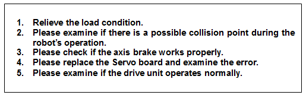
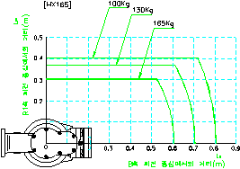
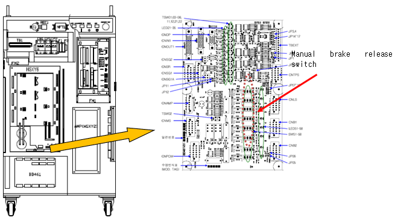
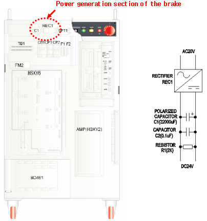
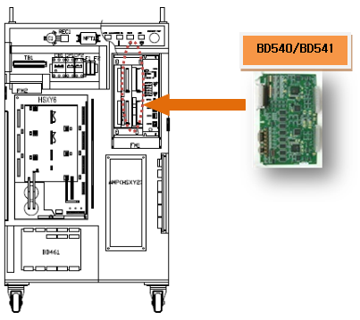
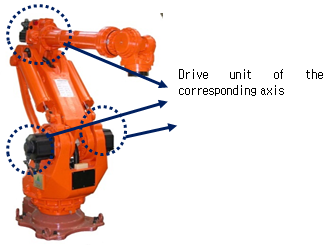

1.1.21.1. Outline
The motor or the drive unit is being overloaded. If a motor or drive operation exceeds continuous working conditions, the service life is decreased because of overheating, so the servo board detects the error and stops the robot.
1.1.21.2. Causes and checking methods

1. Relieve the load condition.
If the overload error occurs during a normal robot operation, check if it is because of load condition, or the controller or robot body even with a normal load condition. Relieve the working load condition of the robot in the following manner to see if the overload error is solved.
Check the reduced tool load.
Check the robot waiting time inserted or the reduced robot speed.
If the overload error persists even with relieved load condition, check the controller or the robot body for any problem.
Both the tool weight and the inertia size are important for the load of the robot. For the allowed inertia for each robot, check the maintenance manual. Here is an example of an HX165 robot.

Figure 5.62 Inertia is allowed for the wrist axis of the HX165 robot.
2. Examine if there is a possible collision point during the robot’s operation.
Please check if there is a point where the robot may be interfered or may have a collision in the operation area. This error may occur if the robot is interfered by other equipment. In that case, please modify the job program so that the interference will not occur.
3. Check if the axis brake works properly.
The brake release functions of the corresponding axis may have an error or the release voltage of the brake release may have a problem.
1) Examine if the brake release of each axis has an error.
Please remove the motor’s power supply (motor off), and check if you can release the brake of the axis with a manual brake switch. You can confirm it with the sound of the brake release from the motor.

2) Examine the error on the brake’s power supply
If the “E0012 brake power error” message is displayed at the same time, there is an error on the brake’s power supply unit.
The capacitor and rectifier are installed on top of the controller. A DC24V power is generated from the 20 V one. Check if the DC24V is generated by using a tester.

4. Replace the Servo board and examine the error.
After the replacement of the Servo board, if the error does not persist, the Servo board is faulty. Please replace the Servo board with a new one.

5. Examine if the drive unit operates normally.
Please check if the drive unit of the corresponding axis (motor, decelerator) works properly.
